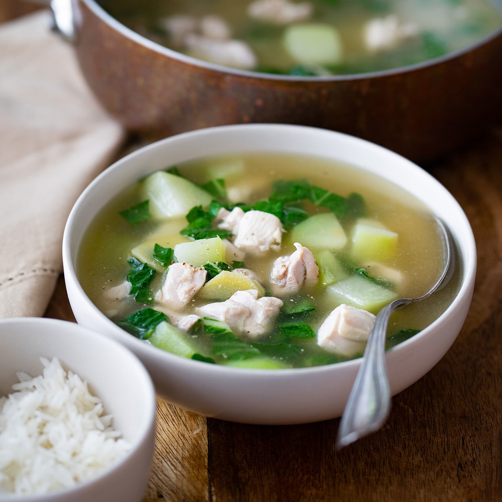

Home

In the Philippines, adobong baboy (pork adobo) is made by stewing pork in soy sauce, vinegar, sugar and aromatics. Serve this healthy pork adobo recipe with rice to get every last bit of the flavorful sauce. This dish gets better as it sits, making it a perfect make-ahead candidate for effortless entertaining.
Recipe Facts
Active: 30 mins
Servings: 8
Ingredients
- 3 tablespoons canola oil or avocado oil
- ½ cup chopped yellow onion
- ¼ cup thinly sliced fresh ginger
- 6 cloves garlic, minced
- 1 pound boneless, skinless chicken thighs, trimmed and cut into 1/2-inch pieces
- 4 cups low-sodium chicken broth
- 1½ cups peeled and cubed green papaya or chayote
- 2 cups chopped malunggay leaves or bok choy leaves
- 1 tablespoon fish sauce
- ¼ teaspoon salt
- ¼ teaspoon ground black pepper
Directions
- Heat oil in a large pot over medium heat. Add onion, ginger and garlic; cook, stirring, until the onion starts to turn translucent, about 3 minutes. Add chicken and broth; cook, stirring, until the chicken is just cooked through, about 5 minutes. Add papaya (or chayote), malunggay (or bok choy), fish sauce, salt and pepper; continue simmering until the vegetables are tender and the flavors have melded, about 5 minutes more.
Nutritional Facts
- Calories 344
- Protein 27.4g
- Carbohydrates 14.2g
- Dietary Fiber 1.9g
- Sugar 6.1g
- Fat 20.5g
- Saturated Fat 3.6g
- Cholesterol 75.5mg
- Vitamin A IU 2134.5IU
- Vitamin C 52.1mg
- Folate 56mcg
- Calcium 82.8mg
- Iron 2.3g
- Magnesium 51.9mg
- Potassium 634.2mg
- Sodium 663mg
- Thiamin 0.1mg
Back to top